Featured hero
Every rule that paints this component, in one file. Colour through a role, geometry straight from a primitive.
Live
The component in the markup it ships with, quoted from the frozen kit, inside the product's own wrapper and painted by components/index.css alone. Each frame is a page of its own, so the width under the title is a real viewport and the media queries answer to it.
States, as they look
Photographs, not renderings. Each was taken in the specimen linked beside it with a REAL pointer, a real Tab and the mouse button really held down (ui-kit/_verify/states.cjs); nothing here is a state faked with a stand class, which is the rule this section used to be missing because of. One row per distinct FACE: two elements that measure the same at rest are one picture, however many screens carry them, and that grouping is computed rather than chosen. The pictures go stale the moment a rule changes, so each one records the files it was taken from and python3 ui-kit/_states.py fails when their bytes move.
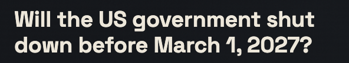
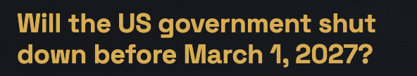
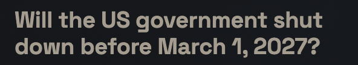
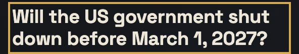
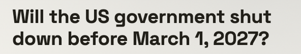
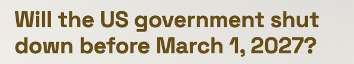
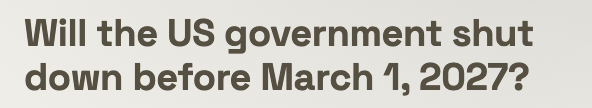
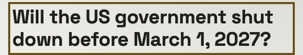
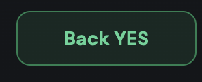
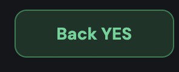
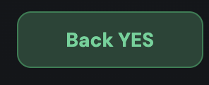
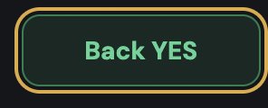
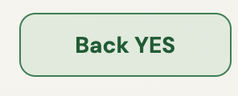
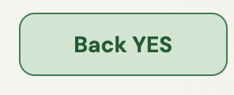
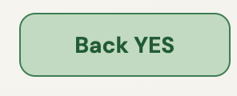
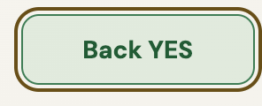
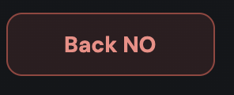
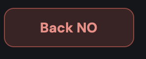
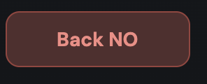
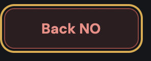
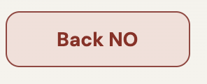
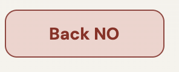
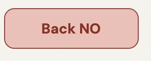
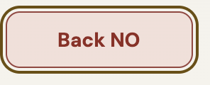
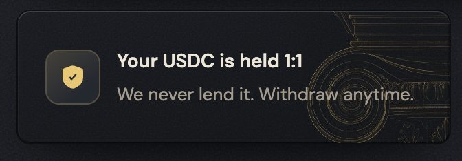
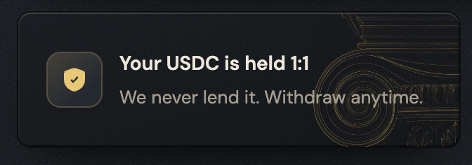
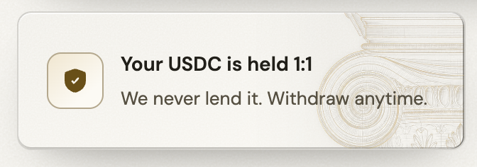
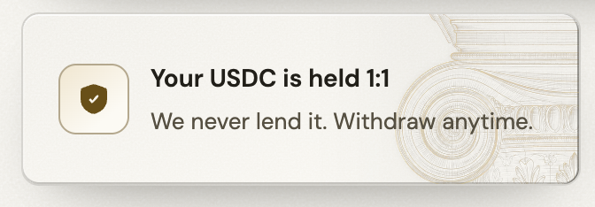
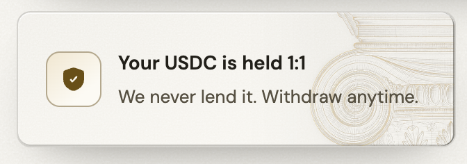
Not staged: focus. No specimen puts this one where the state can be raised, which is a specimen debt and not a missing rule.
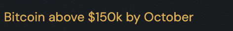
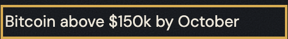
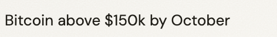
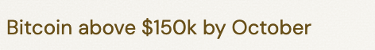
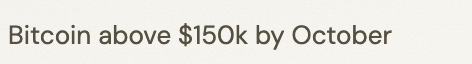
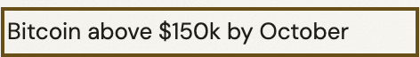
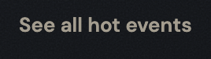
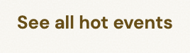
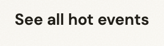
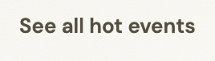
Roles it reads
Colour comes in only through these. Change one on the token page and it changes here and on every screen at once.
--bevel-hair--bevel-md--bg-card--bg-card-from--bg-card-to--bg-control--bg-pressed--border-brass--border-hairline--color-action--line-grid--mask-solid--outcome-line-no--outcome-line-yes--outcome-no--outcome-no-figure--outcome-no-fill--outcome-no-fill-strong--outcome-no-line--outcome-no-text--outcome-yes--outcome-yes-fill--outcome-yes-fill-strong--outcome-yes-line--outcome-yes-text--scrim--shadow-ink-45--shadow-ink-60--shadow-ink-72--shadow-ink-85--surface-grain--text-brass--text-brass-lit--text-brass-vol--text-chip-hover--text-muted--text-primary--tint-brass-60--veil-brand--veil-photo-edge--veil-photo-from--veil-photo-mid--veil-photo-toClasses
Every class this file styles, and how many of the 105 painted screens carry it. A zero is not automatically dead: the last column says whether the class is built at runtime, shown only in the kit, a leftover of the grey wireframes, used by a course page, or genuinely used by nothing. Gate 30 fails the build on the last kind.
| class | screens | if zero |
|---|---|---|
| .brand-tile | 2 | |
| .bt-by | 2 | |
| .bt-photo | 2 | |
| .bt-quote | 2 | |
| .bt-tick | 2 | |
| .bt-veil | 2 | |
| .feed-hero | 1 | |
| .hero-duo | 1 | |
| .hero-feature | 1 | |
| .hero-hot | 1 | |
| .hero-main | 1 | |
| .hero-promo | 2 | |
| .hero-side | 1 | |
| .hero-trust | 1 | |
| .hf-area | 1 | |
| .hf-bar | 1 | |
| .hf-btn | 1 | |
| .hf-chart | 1 | |
| .hf-chart-cap | 1 | |
| .hf-chart-legend | 1 | |
| .hf-cta | 1 | |
| .hf-eyebrow | 1 | |
| .hf-foot | 1 | |
| .hf-graph | 1 | |
| .hf-graph-wrap | 1 | |
| .hf-grid | 1 | |
| .hf-info | 1 | |
| .hf-line | 1 | |
| .hf-no | 1 | |
| .hf-odds | 1 | |
| .hf-odds-row | 1 | |
| .hf-photo | 1 | |
| .hf-tag | 1 | |
| .hf-title | 1 | |
| .hf-veil | 1 | |
| .hf-vol-area | 1 | |
| .hf-vol-line | 1 | |
| .hf-why | 1 | |
| .hf-yes | 1 | |
| .hh-all | 1 | |
| .hh-head | 1 | |
| .hh-list | 1 | |
| .hh-name | 1 | |
| .hh-prob | 1 | |
| .hh-rank | 1 | |
| .hh-vol | 1 | |
| .ht-art | 1 | |
| .ht-badge | 1 | |
| .ht-body | 1 | |
| .no | 1 | |
| .vol | 1 | |
| .yes | 1 |
Where it stands
What the file says
The selectors and the css, for a person about to edit them. To change this component, edit components/hero.css; to change a value it reads, edit the role in components/tokens.css.
Every state rule, and what it moves
| selector | what moves |
|---|---|
| .hero-trust:hover | transform:translateY(-2px) |
| .hero-trust:active | transform:translateY(0) |
| .hf-title:hover | color:var(--text-brass) |
| .hf-title:active | color:var(--text-muted) |
| .hf-btn.yes:hover | background:var(--outcome-yes-fill-strong) |
| .hf-btn.no:hover | background:var(--outcome-no-fill-strong) |
| .hf-btn.yes:active | background:color-mix(in oklab,var(--outcome-yes) 32%,var(--bg-pressed)) |
| .hf-btn.no:active | background:color-mix(in oklab,var(--outcome-no) 32%,var(--bg-pressed)) |
| .hh-name:hover | color:var(--text-brass) |
| .hh-name:active | color:var(--text-muted) |
| .hh-all:hover | color:var(--text-chip-hover) |
| .hh-all:active | color:var(--text-muted) |
The tokens these states read, on both grounds
Neither panel is a screenshot. Each carries data-theme itself, so the token resolves inside it and a role that was given a value in only one theme shows up here as a control that does not move.
--text-brassConfirm betthe label, on the ground this state puts it on--text-mutedConfirm betthe label, on the ground this state puts it on--outcome-yes-fill-strongConfirm betthe ground the control settles onto--outcome-no-fill-strongConfirm betthe ground the control settles onto--outcome-yesConfirm betthe ground the control settles onto--bg-pressedConfirm betthe ground the control settles onto--outcome-noConfirm betthe ground the control settles onto--text-chip-hoverConfirm betthe label, on the ground this state puts it on--text-brassConfirm betthe label, on the ground this state puts it on--text-mutedConfirm betthe label, on the ground this state puts it on--outcome-yes-fill-strongConfirm betthe ground the control settles onto--outcome-no-fill-strongConfirm betthe ground the control settles onto--outcome-yesConfirm betthe ground the control settles onto--bg-pressedConfirm betthe ground the control settles onto--outcome-noConfirm betthe ground the control settles onto--text-chip-hoverConfirm betthe label, on the ground this state puts it oncomponents/hero.css
/* components/hero.css
Component: hero. Classes: .brand-tile, .bt-by, .bt-photo, .bt-quote, .bt-tick, .bt-veil, .feed-hero, .hero-duo, .hero-feature, .hero-hot, .hero-main, .hero-promo, .hero-side, .hero-trust, .hf-area, .hf-bar, .hf-btn, .hf-chart, .hf-chart-cap, .hf-chart-legend, .hf-cta, .hf-eyebrow, .hf-foot, .hf-graph, .hf-graph-wrap, .hf-info, .hf-line, .hf-no, .hf-odds, .hf-odds-row, .hf-photo, .hf-tag, .hf-title, .hf-veil, .hf-vol-area, .hf-vol-line, .hf-why, .hf-yes, .hh-all, .hh-head, .hh-list, .hh-name, .hh-prob, .hh-rank, .hh-vol, .ht-art, .ht-badge, .ht-body, .no, .vol, .yes.
Reads: --bevel-hair, --bevel-md, --bg-card, --bg-card-from, --bg-card-to, --bg-control, --bg-pressed, --border-brass, --border-hairline, --color-action, --line-grid, --mask-solid, --outcome-line-no, --outcome-line-yes, --outcome-no, --outcome-no-figure, --outcome-no-fill, --outcome-no-fill-strong, --outcome-no-line, --outcome-no-text, --outcome-yes, --outcome-yes-fill, --outcome-yes-fill-strong, --outcome-yes-line, --outcome-yes-text, --scrim, --shadow-ink-45, --shadow-ink-60, --shadow-ink-72, --shadow-ink-85, --surface-grain, --text-brass, --text-brass-lit, --text-brass-vol, --text-chip-hover, --text-muted, --text-primary, --tint-brass-60, --veil-brand, --veil-photo-edge, --veil-photo-from, --veil-photo-mid, --veil-photo-to
Stand: ui-kit/hero.html
Stands on: 2 ui-visual screens (event-feed.html, how-it-works.html)
Colour goes through a role, geometry straight from a primitive. No em dash. */
.feed-hero{display:grid;grid-template-columns:minmax(0,1.72fr) minmax(0,1fr);gap:var(--space-16);align-items:stretch}
.hero-main{display:grid;grid-template-rows:1fr auto;gap:var(--space-16);min-width:0}
.hero-duo{display:grid;grid-template-columns:1fr 1fr;gap:var(--space-16);min-width:0}
.hero-side{display:grid;grid-template-rows:auto 1fr;gap:var(--space-16);min-width:0}
.hero-feature,.hero-trust,.hero-promo,.hero-hot{position:relative;overflow:clip;background-color:var(--bg-card);background-image:var(--surface-grain),linear-gradient(160deg,var(--bg-card-from),var(--bg-card-to));background-blend-mode:overlay,normal;border:1px solid var(--shadow-ink-45);border-radius:var(--radius-10);box-shadow:inset 0 1px 0 var(--bevel-md),inset 1px 0 0 var(--bevel-hair),
inset -1px 0 0 var(--scrim),inset 0 -1px 0 var(--shadow-ink-60),
0 24px 48px -30px var(--shadow-ink-85),0 10px 22px -16px var(--shadow-ink-72)}
.hero-trust,.hero-feature{transition:transform var(--dur-slow) var(--ease-out),box-shadow var(--dur-slow) var(--ease-out)}
.hero-trust:hover{transform:translateY(-2px)}
/* The tile is a claim, not a control: there is no link and no button inside it,
so no ground may change under a finger, and the only thing a press can
honestly say is that the lift above is not stuck. It moves the tile back to
where it already rests rather than anywhere new, which is why it is the one
transform in this pass. (.load-more carries the same declaration and is not a
precedent for it: the lift that one neutralised was deleted in step 7, so it
moves a button from where it is to where it is. This lift is live.) */
.hero-trust:active{transform:translateY(0)}
.hero-feature{display:grid;grid-template-columns:minmax(0,1fr) minmax(0,1.02fr)}
.hf-info{position:relative;overflow:clip;padding:var(--space-20) var(--space-24);display:flex;flex-direction:column;min-width:0}
.hf-photo{position:absolute;inset:var(--hairline) 0 0 var(--hairline);object-fit:cover;object-position:center top;opacity:.42;z-index:var(--z-under)}
.hf-veil{position:absolute;inset:var(--hairline) 0 0 var(--hairline);z-index:var(--z-under);background:linear-gradient(180deg,var(--veil-photo-mid),var(--veil-photo-to) 62%,var(--bg-card)),
linear-gradient(100deg,var(--veil-photo-from),var(--veil-photo-edge) 70%)}
.hf-info>:not(.hf-photo):not(.hf-veil){position:relative;z-index:var(--z-content)}
.hf-eyebrow{display:flex;align-items:center;gap:var(--space-8);font-family:var(--font-body);font-size:var(--text-12);font-weight:var(--weight-semibold);letter-spacing:.07em;text-transform:uppercase;color:var(--text-brass-lit);margin-bottom:var(--space-12)}
.hf-eyebrow svg{width:var(--icon-16);height:var(--icon-16);fill:var(--text-brass-lit)}
.hf-title{font-family:var(--font-display);font-size:var(--display-hero);font-weight:var(--weight-bold);line-height:var(--leading-tight);letter-spacing:-.01em;color:var(--text-primary);text-decoration:none;margin:0 0 var(--space-8);text-wrap:balance}
/* A STATE THAT ONLY EXISTS IN ONE THEME DOES NOT EXIST. This read --text-strong,
which is white on graphite and INK ON CHALK, and the rest colour here is
--text-primary, which is ink on chalk too. So in the Vault the headline lit up
and in daylight the hover painted 14.85:1 over 14.85:1: nothing, in the theme
nobody was checking. Measured, not guessed.
The answer is not a brighter ink, because there is none left in daylight; it is
the system's own signal for "this is a link", which moves in both grounds. */
.hf-title:hover{color:var(--text-brass)}
/* A BARE LINK HAS NO GROUND, so it cannot take the system's --bg-pressed. This
headline is a flex item spanning the whole info column over the photograph,
and an opaque stone behind three display lines reads as a text selection, not
as a control being held. The ink steps down instead: quiet is a colour here,
never an opacity, so the thing every other product fades is written as the
role that was already measured for being quiet. Same answer for the three
text links of this file, and it is the only one that works on a touch screen,
where there is no hover state to have left. Measured on the veiled photo it
stands on: 6.60:1 in the Vault, 6.41:1 in daylight. */
.hf-title:active{color:var(--text-muted)}
.hf-why{font-size:var(--text-14);color:var(--text-muted);line-height:var(--leading-base);margin:0 0 var(--space-16)}
.hf-odds{margin-top:auto}
.hf-bar{height:var(--size-4);border-radius:var(--radius-pill);background:var(--outcome-no);overflow:hidden}
.hf-bar span{display:block;height:100%;background:var(--outcome-yes)}
.hf-odds-row{display:flex;justify-content:space-between;margin-top:var(--space-8);font-family:var(--font-mono);font-size:var(--text-13)}
.hf-yes{color:var(--outcome-yes-text)}
.hf-no{color:var(--outcome-no-figure)}
.hf-foot{display:flex;gap:var(--space-16);margin-top:var(--space-12);font-family:var(--font-mono);font-size:var(--text-12);color:var(--text-muted)}
.hf-foot b{color:var(--text-primary);font-weight:var(--weight-semibold)}
.hf-cta{display:flex;gap:var(--space-8);margin-top:var(--space-16)}
.hf-cta a{flex:1;display:flex;text-decoration:none}
.hf-btn{flex:1;width:100%;min-height:var(--size-40);border-radius:var(--radius-10);font-family:var(--font-body);font-weight:var(--weight-bold);font-size:var(--text-14);border:1px solid;cursor:pointer}
.hf-btn.yes{background:var(--outcome-yes-fill);color:var(--outcome-yes-text);border-color:var(--outcome-yes-line)}
.hf-btn.no{background:var(--outcome-no-fill);color:var(--outcome-no-text);border-color:var(--outcome-no-line)}
.hf-btn.yes:hover{background:var(--outcome-yes-fill-strong)}
.hf-btn.no:hover{background:var(--outcome-no-fill-strong)}
/* THE FEATURED PAIR IS THIS FILE'S, NOT yesno.css's, which is worth writing
down because the two look like one control. Its markup is
.hf-cta > a > button.hf-btn.yes, and every selector in yesno.css hangs off
.yesno, so not one of them reaches this button: the press settled there had to
be brought here or the largest YES on the feed would be the only one with no
answer to a finger.
The value is that one exactly. A held YES keeps its outcome colour and moves
only the stone under it, because settling onto --bg-pressed takes the green
away under the thumb and reads as "it let go", the opposite of what holding
YES means. The border is not restated the way it is there: this hover leaves
the rest edge alone, so there is nothing for a touch screen to miss.
Measured on the label each one carries: 5.72:1 YES and 4.91:1 NO in the
Vault, 5.38 and 5.13 in daylight, every one of them above the hover it
follows, and the press ground is opaque, so the photograph behind the card
cannot change those numbers. */
.hf-btn.yes:active{background:color-mix(in oklab,var(--outcome-yes) 32%,var(--bg-pressed))}
.hf-btn.no:active{background:color-mix(in oklab,var(--outcome-no) 32%,var(--bg-pressed))}
.hf-chart{position:relative;display:flex;flex-direction:column;padding:var(--space-16) var(--space-16) var(--space-12);min-width:0;border-left:1px solid var(--shadow-ink-45);box-shadow:inset 1px 0 0 var(--bevel-hair)}
.hf-chart-legend{display:flex;gap:var(--space-12);justify-content:flex-end;margin-bottom:var(--space-8)}
.hf-tag{display:inline-flex;align-items:center;gap:var(--space-8);font-family:var(--font-mono);font-size:var(--text-12)}
.hf-tag i{width:var(--size-8);height:var(--size-8);border-radius:50%}
.hf-tag.no{color:var(--outcome-no-figure)}
.hf-tag.no i{background:var(--outcome-no)}
.hf-tag.yes{color:var(--outcome-yes-text)}
.hf-tag.yes i{background:var(--outcome-yes)}
.hf-graph-wrap{flex:1;min-height:148px}
.hf-graph{width:100%;height:100%;display:block}
.hf-grid line{stroke:var(--line-grid)}
.hf-area{fill:url(#hfyes)}
.hf-vol-area{fill:url(#hfvol)}
.hf-vol-line{fill:none;stroke:var(--tint-brass-60);stroke-width:1.4;stroke-dasharray:2 3}
.hf-line{fill:none;stroke-width:2}
.hf-line.yes{stroke:var(--outcome-line-yes)}
.hf-line.no{stroke:var(--outcome-line-no)}
.hf-tag.vol{color:var(--text-brass-vol)}
.hf-tag.vol i{background:var(--color-action)}
.hf-chart-cap{font-family:var(--font-mono);font-size:var(--text-11);letter-spacing:.03em;color:var(--text-muted);margin-top:var(--space-8)}
.hero-trust{display:flex;align-items:center;gap:var(--space-12);padding:var(--space-16) var(--space-20);min-height:82px}
.ht-art{position:absolute;top:0;bottom:0;right:0;height:100%;width:48%;object-fit:cover;object-position:center right;opacity:.6;z-index:var(--z-under);pointer-events:none;-webkit-mask-image:linear-gradient(to left,var(--mask-solid) 62%,transparent 99%);mask-image:linear-gradient(to left,var(--mask-solid) 62%,transparent 99%)}
.hero-trust .ht-badge,.hero-trust .ht-body{position:relative;z-index:var(--z-content)}
.ht-badge{width:var(--size-40);height:var(--size-40);flex:0 0 var(--size-40);border-radius:var(--radius-10);display:grid;place-items:center;color:var(--text-brass-lit);background:linear-gradient(140deg,color-mix(in oklab,var(--color-action) 22%,var(--bg-control)),var(--bg-control) 74%);border:1px solid color-mix(in oklab,var(--color-action) 30%,var(--border-hairline))}
.ht-badge svg{width:var(--size-20);height:var(--size-20)}
.ht-body{display:flex;flex-direction:column;gap:var(--space-4);min-width:0}
.ht-body b{font-family:var(--font-body);font-size:var(--text-14);font-weight:var(--weight-semibold);color:var(--text-primary)}
.ht-body span{font-size:var(--text-13);color:var(--text-muted);line-height:var(--leading-base)}
.hero-promo.brand-tile{display:block;padding:var(--space-24) var(--space-24) var(--space-24);min-height:210px}
.bt-photo{position:absolute;inset:0;width:100%;height:100%;object-fit:cover;object-position:right center;opacity:.5;z-index:var(--z-under);-webkit-mask-image:linear-gradient(to left,var(--mask-solid) 26%,transparent 92%);mask-image:linear-gradient(to left,var(--mask-solid) 26%,transparent 92%)}
.bt-veil{position:absolute;inset:0;z-index:var(--z-under);background:linear-gradient(90deg,transparent 52%,var(--veil-brand) 84%)}
.brand-tile::before{content:'';position:absolute;inset:var(--space-12);z-index:var(--z-float);pointer-events:none;border:1px solid var(--border-brass);border-radius:var(--radius-6);clip-path:polygon(0 0,100% 0,100% calc(100% - 20px),calc(100% - 20px) 100%,0 100%)}
.brand-tile::after{content:'';position:absolute;right:10px;bottom:23px;z-index:var(--z-float);width:var(--size-28);height:var(--hairline);background:var(--border-brass);transform:rotate(-45deg);pointer-events:none}
.bt-tick{position:relative;z-index:var(--z-content);width:var(--size-32);height:23px;margin-bottom:var(--space-16);filter:drop-shadow(0 2px 3px var(--shadow-ink-60))}
.bt-quote{position:relative;z-index:var(--z-content);margin:0;font-family:var(--font-display);font-weight:var(--weight-bold);text-transform:uppercase;font-size:var(--display-quote);line-height:var(--leading-flat);letter-spacing:.01em;color:var(--text-primary);text-wrap:balance}
.bt-quote em{font-style:normal;color:var(--text-brass-lit)}
.bt-by{position:relative;z-index:var(--z-content);display:block;margin-top:var(--space-16);font-family:var(--font-body);font-size:var(--text-13);letter-spacing:.05em;color:var(--text-brass-lit)}
.hero-hot{display:flex;flex-direction:column;padding:var(--space-16) var(--space-20) var(--space-16)}
.hh-head{display:flex;align-items:center;gap:var(--space-8);margin-bottom:var(--space-8)}
.hh-head svg{width:var(--icon-18);height:var(--icon-18);color:var(--text-brass-lit)}
.hh-head h3{font-family:var(--font-display);font-size:var(--text-16);font-weight:var(--weight-bold);letter-spacing:-.01em;color:var(--text-primary);margin:0}
.hh-list{list-style:none;margin:0;padding:0;display:flex;flex-direction:column;flex:1}
.hh-list li{display:grid;grid-template-columns:20px minmax(0,1fr) auto auto;align-items:center;gap:var(--space-8);padding:var(--space-8) 0;border-top:1px solid var(--shadow-ink-45);box-shadow:inset 0 1px 0 var(--bevel-hair)}
.hh-list li:first-child{border-top:0;box-shadow:none}
.hh-rank{font-family:var(--font-display);font-weight:var(--weight-bold);font-size:var(--text-13);color:var(--text-brass-lit);text-align:center}
.hh-name{font-size:var(--text-13);color:var(--text-primary);text-decoration:none;overflow:hidden;text-overflow:ellipsis;white-space:nowrap}
.hh-name:hover{color:var(--text-brass)} /* same one-theme hover as .hf-title above, same fix */
/* The row is a grid and only the name is the link, so a stone would paint one
cell of five and read as a highlight on the title rather than a press on the
row. Ink again, for the reason written above .hf-title:active. 6.40:1 in the
Vault, 7.22:1 in daylight, on the hot-list card. */
.hh-name:active{color:var(--text-muted)}
.hh-prob{font-family:var(--font-mono);font-size:var(--text-13);color:var(--outcome-yes-text)}
.hh-vol{font-family:var(--font-mono);font-size:var(--text-11);color:var(--text-muted);min-width:var(--size-40);text-align:right}
.hh-all{margin-top:var(--space-12);font-size:var(--text-13);font-weight:var(--weight-semibold);color:var(--text-brass-lit);text-decoration:none;align-self:flex-start}
/* THE WORST NUMBER THIS PASS FOUND, and it was already shipped. --color-action-lit
is the LIT stop of an action gradient, a pale brass meant to sit under dark ink.
Section 3 does not move it, because a mid-luminance metal reads on both stones.
As a hover COLOUR that is fine on graphite (9.57:1) and is 1.71:1 on chalk, so
in daylight the link vanished at the moment a person pointed at it, from 6.96:1
at rest. A role that does not theme is safe as a ground and not as ink.
--text-chip-hover is the role that already answers this: it is the chip family
reaching full ink, bone on graphite and ink on chalk. 14.71:1 and 14.85:1. */
.hh-all:hover{color:var(--text-chip-hover)}
/* The brass link goes QUIET, not deeper brass, and the reason is that no darker
brass says anything in both themes: --text-brass is the same value as this
link's rest ink in daylight, so the press would be invisible there, and
--color-action lands at 2.23:1 on the pale card, so it would be unreadable.
Muted is the one step that reads on both stones: 6.54:1 in the Vault, 7.42:1
in daylight. */
.hh-all:active{color:var(--text-muted)}
@media(max-width:980px){
.feed-hero{grid-template-columns:1fr}
.hero-feature{grid-template-columns:minmax(0,1fr) minmax(0,1fr)}
}
@media(max-width:620px){
.hero-feature{grid-template-columns:1fr}
.hf-chart{border-left:0;box-shadow:none;border-top:1px solid var(--shadow-ink-45)}
.hero-duo{grid-template-columns:1fr}
}
@media(prefers-reduced-motion:reduce){
}